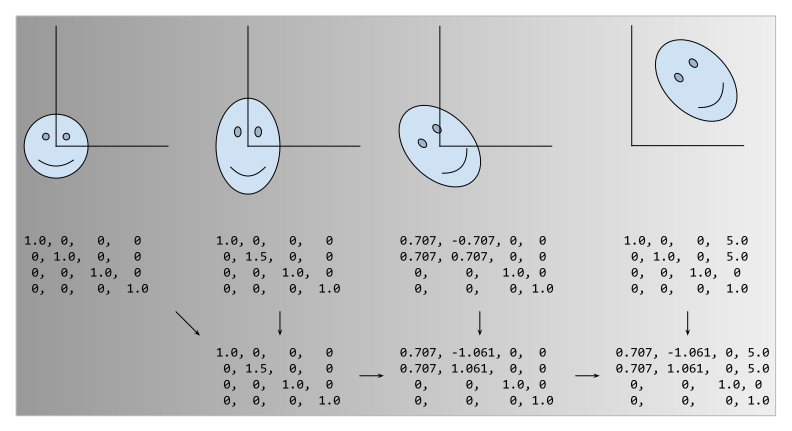

Lazy Resampling#
Introduction#
Lazy Resampling is a new feature introduced in MONAI 1.2. This feature is still experimental at this time and it is possible that behaviour and APIs will change in upcoming releases.
Lazy resampling reworks the way that preprocessing is performed. It improves upon standard preprocessing pipelines and can provide significant benefits over traditional preprocessing. It can improve: * pipeline execution time * pipeline memory usage in CPU or GPU * image and segmentation quality by reducing incidental noise and artifacts caused by resampling
The way it does this is by adopting the methods used in computer graphics pipelines, in which transformations to objects in a scene are modified by composing together a sequence of “homogeneous matrices”.
Rather than each transform being executed in isolation, potentially requiring the data to be resampled to make a new tensor, transforms whose operations can be described in terms of homogeneous transforms do not execute their transforms immediately. Instead, they create a “pending operation”, which is added to a list of operations that will be fused together and carried out at the point that they are required.
How Lazy Resampling changes preprocessing#
In order to understand the difference between traditional pipelines and lazy pipelines, it is best to look at an example pipeline and the differences between their execution strategies:
Traditional execution#
With traditional resampling, found both in MONAI and many other preprocessing libraries, you typically define a sequence
of transforms and pass them to a Compose object, such as monai.transforms.compose.Compose.
Example:
transforms = [
Spacingd(keys=["img", "seg"], ...),
Orientationd(keys=["img", "seg"], ...),
RandSpatialCropd(keys=["img", "seg"], ...),
RandRotate90d(keys=["img", "seg"], ...),
RandRotated(keys=["img", "seg"], ...),
RandZoomd(keys=["img", "seg"], ...),
RandGaussianNoised(keys="img", ...),
]
pipeline = Compose(transforms)
# elsewhere this will be called many times (such as in a Dataset instance)
outputs = pipeline(inputs)
The following will then happen when we call pipeline(inputs):
Spacingdis called and interpolates the data samplesOrientationdpermutes the data samples so that their spatial dimensions are reorganisedRandSpatialCropdcrops a random patch of the data samples, throwing away the rest of the data in the processRandRotate90dhas a chance of performing a tensor-based rotation of the data samplesRandRotatedhas a chance of performing a full resample of the data samplesRandZoomdhas a chance of performing a interpolation of the data samplesRandGaussianNoisedhas a chance of adding noise toimg
Figure showing traditional pipeline execution. Tensors (the boxes in the main body of the image) are passed through the pipeline, and the state of their applied_operations property is shown at each step. Tensors with a thick red border have undergone some kind of resample operation at that stage.#
Overall, there are up to three occasions where the data is either interpolated or resampled through spatial transforms
(Spacingd, RandRotated and RandZoomd). Furthermore, the crop that occurs means that the output data
samples might contain pixels for which there is data but that show padding values, because the data was thrown away by
RandSpatialCrop.
Each of these operations takes time and memory, but, as we can see in the example above, also creates resampling artifacts and can even destroy data in the resulting data samples.
Lazy execution#
Lazy resampling works very differently. When you execute the same pipeline with lazy=True, the following happens:
Spacingdis executed lazily. It puts a description of the operation that it wants to perform onto a list of pending operationsOrientationdis executed lazily. It adds a description of its own operation to the pending operation list so now there are 2 pending operationsRandSpatialCropdis executed lazily. It adds a description of its own operation to the pending operation list so now there are 3 pending operationsRandRotate90dis executed lazily. It adds a description of its own operation to the pending operation list so now there are 4 pending operationsRandRotatedis executed lazily. It adds a description of its own operation to the pending operation list so now there are 5 pending operationsRandZoomdis executed lazily. It adds a description of its own operation to the pending operation list so now there are 6 pending operations[Spacingd, Orientationd, RandSpatialCropd, RandRotate90d, RandRotated, RandZoomd] are all on the pending operations list but have yet to be carried out on the data
RandGaussianNoisedis not a lazy transform. It is now time for the pending operations to be evaluated. Their descriptions are mathematically composited together, to determine the operation that results from all of them being carried out. This is then applied in a single resample operation. Once that is done, RandGaussianNoised operates on the resulting data
Figure showing lazy pipeline execution. We show the state of the pending_operations and applied_operations properties of the tensor as it is processed by the pipeline. Thick red borders indicate some kind of resampling operation has taken place at that step. Lazy resampling performs far fewer of these operations.#
The single resampling operation has less noise induced by resampling, as it only occurs once in this pipeline rather than three times in the traditional pipeline. More importantly, although the crop describes an operation to keep only a subset of the data sample, the crop is not performed until after the spatial transforms are completed, which means that all of the data sample that is within bounds is preserved and is part of the resulting output.
Composing homogeneous matrices#
Although a full treatment of homogeneous matrices is outside the scope of this document, a brief overview of them is useful to understand the mechanics of lazy resampling. Homogeneous matrices are used in computer graphics to describe operations in cartesian space in a unified (homogeneous) fashion. Rotation, scaling, translation, and skewing are amongst the operations that can be performed. Homogeneous matrices have the interesting property that they can be composited together, thus describing the result of a sequence of operations. Note that ordering is important; scale -> rotate -> translation gives a very different result to translation -> rotate -> scale.
The ability to composite homogeneous matrices together allows a sequence of operations to be carried out as a single operation, which is the key mechanism by which lazy resampling functions.
API changes#
A number of new arguments have been added to existing properties, which we’ll go over in detail here. In particular,
we’ll focus on Compose<monai.transforms.compose.Compose> and
LazyTrait/ LazyTransform
and the way that they interact with each other.
Compose#
Compose gains a number of new arguments that can be used to control
resampling behaviour. Each of them is covered in its own section:
lazy#
lazy controls whether execution is carried out in a lazy manner or not. It has three values that it can take:
lazy=False forces the pipeline to be executed in the standard way with every transform applied immediately
lazy=True forces the pipeline to be executed lazily. Every transform that implements
LazyTrait(or inheritsLazyTransform) will be executed lazilylazy=None means that the pipeline can execute lazily, but only on transforms that have their own lazy property set to True.
overrides#
overrides allows the user to specify certain parameters that transforms can be overridden with when they are
executed lazily. This parameter is primarily provided to allow you to run a pipeline without having to modify fields
like mode and padding_mode.
When executing dictionary-based transforms, you provide a dictionary containing overrides for each key, as follows. You
can omit keys that don’t require overrides:
{
"image": {"mode": "bilinear"},
"label": {"padding_mode": "zeros"}
}
log_stats#
Logging of transform execution is provided if you wish to understand exactly how your pipelines execute. It can take a
bool or str value, and is False by default, which disables logging. Otherwise, you can enable it by passing it
the name of a logger that you wish to use (note, you don’t have to construct the logger beforehand).
LazyTrait / LazyTransform#
Many transforms now implement either LazyTrait<monai.transforms.traits.LazyTrait> or LazyTransform<monai.transforms.transform.Transform>. Doing so marks the transform for lazy execution. Lazy transforms have the following in common:
__init__ has a lazy argument#
lazy is a bool value that can be passed to the initialiser when a lazy transform is instantiated. This
indicates to the transform that it should execute lazily or not lazily. Note that this value can be overridden by
passing lazy to __init__. lazy is False by default
__call__ has a lazy argument#
lazy is an optional bool value that can be passed at call time to override the behaviour defined during
initialisation. It has a default value of None. If it is not None, then this value is used instead of
self.lazy. This allows the calling Compose instance to override
default values rather than having to set it on every lazy transform (unless the user sets
Compose.lazy to None).
lazy property#
The lazy property allows you to get or set the lazy status of a lazy transform after constructing it.
requires_current_data property (get only)#
The requires_current_data property indicates that a transform makes use of the data in one or more of the tensors
that it is passed during its execution. Such transforms require that the tensors must therefore be up to date, even if
the transform itself is executing lazily. This is required for transforms such as CropForeground[d],
RandCropByPosNegLabel[d], and RandCropByLabelClasses[d]. This property is implemented to return False on
LazyTransform and must be overridden to return True by transforms that check data values when executing.
Controlling laziness#
There are two ways that a user can provide more fine-grained control over laziness. One is to make use of lazy=None
when initialising or calling Compose instances. The other is to use the ApplyPending[d] transforms. These
techniques can be freely mixed and matched.
Using lazy=None#
Lazy=None tells Compose to honor the lazy flags set on each lazy transform. These are set to False by default
so the user must set lazy=True on the transforms that they still wish to execute lazily.
lazy=None example:#
Figure shwoing the effect of using lazy=False when Compose is being executed with lazy=None. Note that
the additional resamples that occur due to RandRotate90d being executed in a non-lazy fashion.#
Using ApplyPending[d]#
ApplyPending[d] causes all pending transforms to be executed before the following transform, regardless of whether
the following transform is a lazy transform, or is configured to execute lazily.
ApplyPending Example:#
Figure showing the use of ApplyPendingd to cause
resampling to occur in the midele of a chain of lazy transforms.#